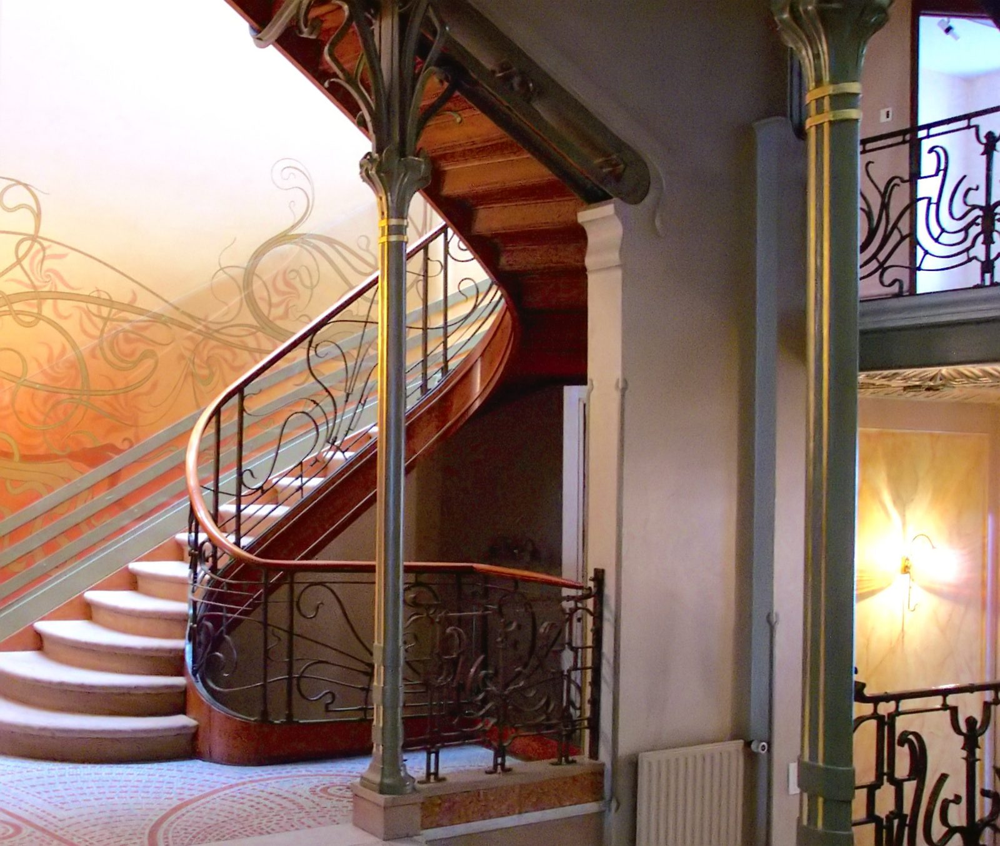

References / Architecture / 340
Staircase hall of the Hôtel Tassel, Brussels
Victor Horta’s stair hall, one of the first Art Nouveau interiors: an exposed iron column that branches like a plant stem, whiplash railings, and painted tendrils that sweep up the wall.
- Source
- Wikipedia: Hôtel Tassel
- Creator
- Victor Horta
- Made
- 1892–1893
- Style
- Art Nouveau (agent-proposed, not yet reviewed by a person)
- Moods
- Flowing, luminous, organic
- Evidence
- Downloaded and inspected Henry Townsend’s September 2002 photograph of the stair hall on Wikimedia Commons (1700 × 1440 px). The colours are warm and strongly saturated in this photograph and may not match the paint exactly. The house is a private office and was not visited.
- Reviewed
- Rights
- Open license, stored. License: public domain. Rights policy

Context
Wikipedia: Horta designed the house for the scientist Émile Tassel and built it in 1892–1893. With Paul Hankar’s house of the same years it is considered one of the first Art Nouveau buildings. A steel-and-glass middle section links a street block and a garden block; it holds the stairs and landings and brings light down from a glass roof. Horta designed every detail, including woodwork, stained glass, mosaic floors, and furniture. Wikipedia: Hôtel Tassel.
Since 2000 the house has been part of the UNESCO World Heritage site “Major Town Houses of the Architect Victor Horta (Brussels)”. The Hôtel Tassel influenced Hector Guimard, who built the Castel Béranger in Paris after he saw it. Wikipedia: Hôtel Tassel; Wikipedia: Art Nouveau.
Observed
- A slender iron column, painted gray-green with thin gold bands, stands at the foot of the stair. At its top it splits into curling iron tendrils that hold the beam above.
- The stair turns in a smooth curve. Its polished wooden handrail follows the curve without a break.
- The iron balustrade is a web of dark, looping whiplash lines between vertical bars; a similar railing on the upper landing continues the pattern.
- The wall beside the stair carries painted olive-green tendrils that swirl up and to the left over a peach and salmon ground, with parallel bands that follow the rake of the stair.
- The floor is a pale mosaic with large, curving pink lines.
- Colours are warm peach, salmon, and cream, with gray-green iron and brown wood.
Why it belongs
Here the whiplash is not applied ornament but structure: the column, the railing, and the wall painting are the same line in iron and paint.
The palette of gray-green iron, warm plaster, and wood is the source of the style’s moss-and-terracotta colour pair.
Borrow
Let a thin vertical element split at its top into curling branches where it meets a horizontal one.
Run a painted flourish diagonally across a wall or a hero area so that it follows the direction of movement, as the tendrils follow the stair.
Measured
Machine-extracted by tools/image-traits.py on . Full measurement.
- Mean chroma
- 0.16
- Palette
- #fefcfe 8%
- #321910 7%
- #402a1c 6%
- #4a413e 6%
- #b69a8f 5%
- #a18b86 5%
- #40372e 5%
- #917b75 4%

